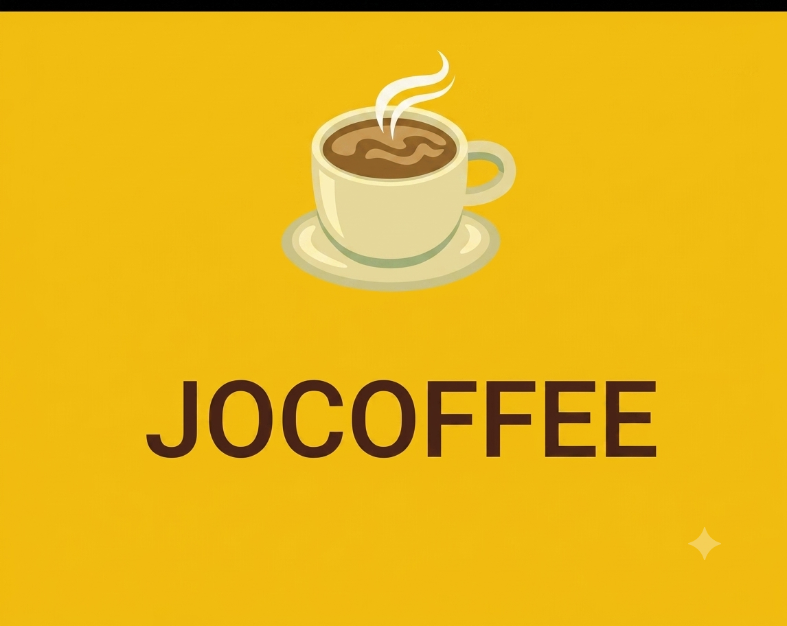

The JoCoffee platform is a web and Android-based application designed to facilitate seamless reservations, enhance customer engagement, and provide up-to-date information for customers and administrators.
JoCoffee is a dual-system application designed to facilitate seamless café reservations, enhance customer engagement, and provide up-to-date information about the establishment. Developed as a hybrid platform, it bridges a web-based portal for administrators with a native Android mobile application for customers. The system streamlines the booking workflow, replaces manual coordinates, and ensures efficient, centralized data management.
The application provides distinct functionalities tailored for both administrators and customers to manage the cafe's daily operations:
The tech stack and architectural frameworks implemented throughout this platform include[cite: 1]:
 JAVA & SPRING
JAVA & SPRING
 MongoDB
MongoDB
 JSP
JSP
 Android Studio
Android Studio
 Cloudinary
Cloudinary
 GCP
GCP
The system successfully records user data and compiles components for complete cross-platform deployment[cite: 1]:
Core Features Demo:
A comprehensive demonstration showcasing the end-to-end workflow of the JoCoffee platform. The video covers the Android Client App where customers register, browse the menu, and book tables (specifying date, group size, and special requests). It also demonstrates the Admin Web Portal used by managers to dynamically update the menu catalog, review active reservations, and control user access rights